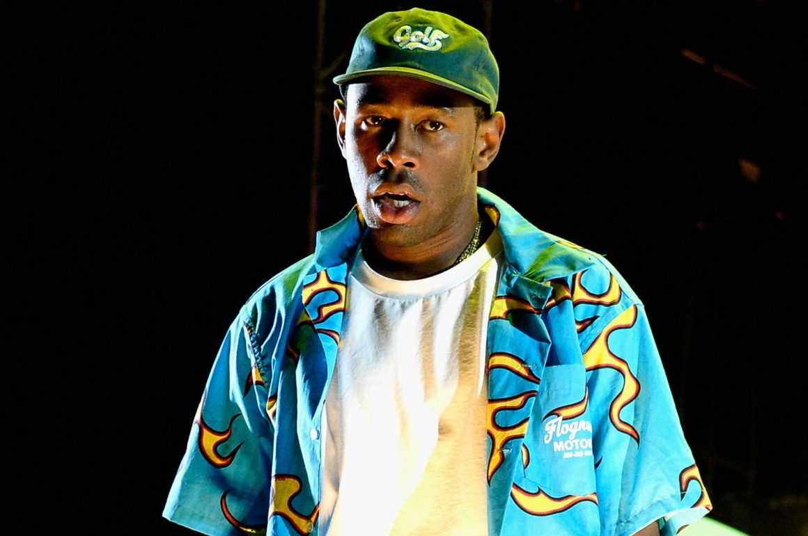
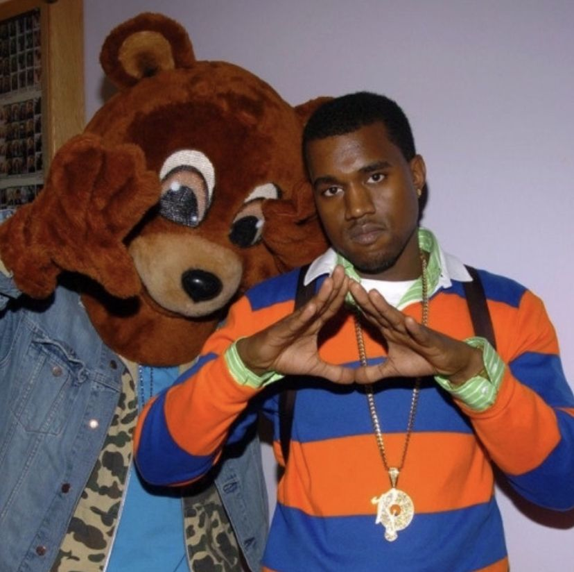
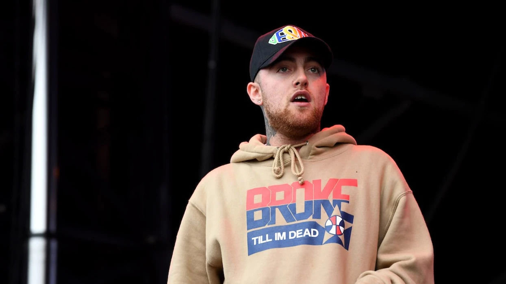

This is a subjective list, meaning this is my opinion.
Feel free to disagree.
Below, I am listing my personal favorite artists.
They are in no particular order.
Tyler, the Creator

About Tyler, the Creator
Tyler, the Creator got his start in about 2007, along with a group he formed known
as Odd Future. The group consisted of many people, too many to list them all, but some
of the main ones include Frank Ocean, Earl Sweatshirt, Syd, Domo Genesis, Hodgy Beats,
Taco, and Jasper Dolpin. They were a group of creative youung people, who made their
own music, had their own fashion line, and had their own TV show on Adult Swim.
Tyler's early music was very vulgar and problematic, which is where he got the attention
of a lot of people back then. His lyrics were very dark and controversial, even getting
him banned from the UK at one point. But one of his greatest attributes is his ability
to grow not only as a musician, but as a person in general. Throughout his discography,
you can see him slowly get better at what he does and more comfortable writing more
meaningful lyrics. Each album has its own personality and showcases Tyler's incredible
creatitivy.
My Opinions
My personal favorite Tyler, the Creator song is Okaga, CA, from his 2015 Cherry Bomb album.
This album was like his transition album, where he was slowly straying away from his
edgy lyrics and rapping and getting into singing and producing. It was his first album
of this style, so many people do not like it as much, as it comes off as messy and unpolished,
but I personally really like it, flaws and all. Okaga, CA is the last song on the album, and
it's a very mellow song that describes his feelings for someone, and his desire to run away
from everything with them to be together.
Okaga, CA
Album
Year
Length
Bastard
2009
55min
Goblin
2011
1hr 22min
Wolf
2013
1hr 10min
Cherry Bomb
2015
54min
Flower Boy
2017
46min
IGOR
2019
39min
Call Me If You Get Lost
2021
52min
CMIFYL: The Estate Sale
2023
1hr 17min
Tyler, the Creator's Discography
Kanye West

About Kanye West
It is difficult to talk about Kanye West after his heavy controversy earlier this year. It was very disappointing
to hear him talk about what he did, and by pointing out his artistic abilites, I am in no way excusing what he said.
Kanye West began producing beats for many popular rappers in the 1990s, including one of the most significant
rappers of all time, Jay-Z. He would later become an independent artisit use his producition abilities to create
his first album, College Dropout. Kanye was one of the biggest and most influential artists of the 2000s,
changing the way that hip-hop and rap was seen to the public. He introduced a lot of autotune singing and
very unique production and his albums would go on to break many records.
My Opinions
My personal favorite album is My Beautiful Dark Twisted Fantasty because of the incredible production.
That album had so much care put into it and so many collaborations and features that I can't even begin to
mention them all. For this album, Kanye West flew to Hawaii after receiving much backlash for many things
he had done at the time. It was here that he worked nonstop on the album, collabortating with many producers
and artists to create this recordbreaking album.
For my favorite Kanye West song, I couldn't decide between Runaway, from MBDTF or Ghost Town, from ye.
I decided to go with Ghost Town today, but my opinion on this will probably change depending on my mood.
Both songs are incredible, but I went with Ghost Town because of the phenomenal Kid Cudi feature.
Ghost Town
Album
Year
Length
The College Dropout
2004
1hr 16min
Late Registration
2005
1hr 10min
Graduation
2007
54min
808s & Heartbreak
2008
52min
My Beautiful Dark Twisted Fantasy
2010
1hr 8min
Yeezus
2013
40min
The Life of Pablo
2016
1hr 6min
ye
2018
23min
Jesus is King
2019
27min
Donda
2021
2hr 11min
Kanye West's Discography
Mac Miller

About Mac Miller
Mac Miller was a rapper who started making music around the late 2000s, with his first studio album being K.I.D.S.
coming out in the year 2010. His music had heavy themes of depression and drug abuse, and his overall struggle with
life. He unfortunately passed away in the year 2018, shortly after the release of his Swimming album. He passed
away due to fentanyl overdose found in the drugs he had been using. The drug dealer that he bought it from had been
selling product like this knowing that it was dangerous and not informing his customers of it. The dealer has now been
sentenced to 10 years in prison.
My Opinions
It's depressing to hear about someone so young and talented to be losing their life so early, especially someone
who was already struggling with depression and addiction. He was a very talented individual who created music as an
outlet for his struggles.
Perfecto
Album
Year
Length
K.I.D.S
2010
54min
Blue Slide Park
2011
46min
Macadelic
2012
1hr 4min
Watching Movies with the Sound Off
2013
1hr 1min
GO:OD AM
2015
1hr 10min
The Divine Feminine
2016
52min
Swimming
2018
58min
Circles
2020
57min
Mac Miller's Discography
Final Statements
I am currently expanding my music taste, meaning there was a lot more artists
of a lot of different genres that I would've loved to include, but in order
to save time and space, I only included the ones that I've been listening to
for the longest.